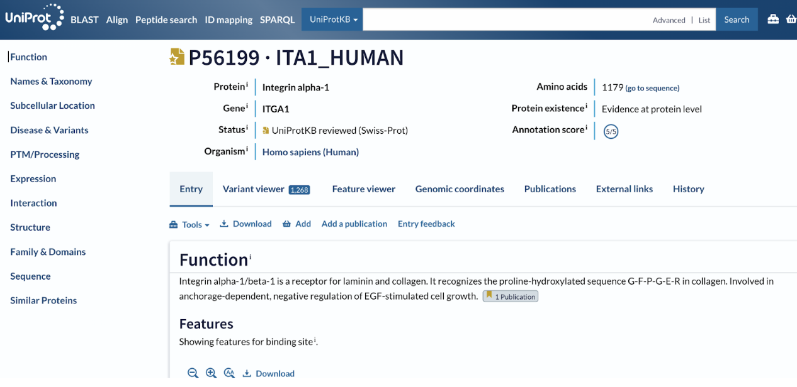
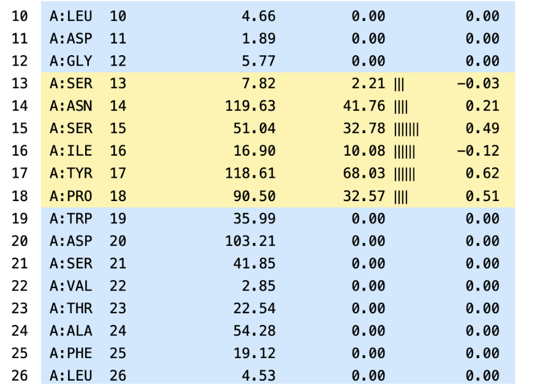
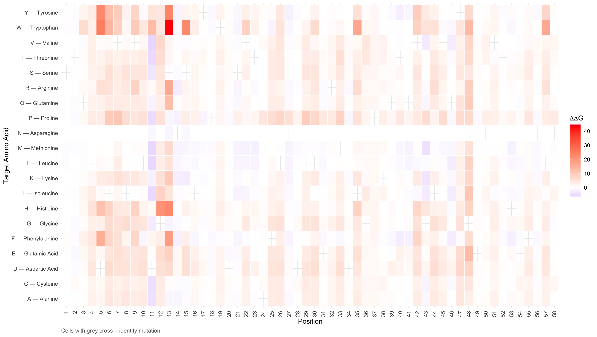

Binding Energy Optimization in Integrin Through Site-Directed Mutagenesis
This project investigates how targeted mutations affect binding free energy in the Integrin Alpha-1 I-domain. Residues near the magnesium-binding site were first selected and mutated using MutateX and FoldX, and then additional surrounding sites were mutated using a high-performance cluster (HPC). The goal is to identify mutations that stabilize binding interactions.
Residue Numbering
This analysis uses PDB structure numbering (2M32), which covers a 58-residue region of the I-domain and does not correspond directly to the full UniProt sequence. The PDB structure begins at UniProt residue 168, creating a consistent offset of +167 between PDB and UniProt positions.
PDB pos. → UniProt pos. → Residue
PDB 1 (S) = UniProt 168
PDB 11 (D) = UniProt 178
PDB 13 (S) = UniProt 180
PDB 14 (N) = UniProt 181
PDB 17 (Y) = UniProt 184
PDB 18 (P) = UniProt 185
PDB 58 = UniProt 225
All mutation codes throughout this site (e.g. D11V, S13W, N14F) use PDB 2M32 numbering. The format is: [wild-type residue][PDB position][mutant residue]. Since all residues are on chain A, the chain letter is omitted.
1. Sequence Acquisition
The Integrin Alpha-1 sequence was obtained from UniProt.

The protein structure and confidence scores were assessed using AlphaFold. Residues surrounding the magnesium-binding site were examined, including G179, N181, I183, M249, Q247, G282, and S284. All of the selected residues showed either "high" or "very high" confidence scores.
View AlphaFold Model
2. Secondary Structure Prediction
PSIPRED was used to identify secondary structural features such as alpha helices, beta strands, and disordered regions. Mutations were avoided in beta-strand regions. The selected residues were located primarily in coil regions, making them more suitable for mutagenesis.


3. Surface Area and Interface Analysis
The structure was obtained from the Protein Data Bank (PDB ID: 2M32), representing the Alpha-1 integrin I-domain in complex with a collagen-like peptide.

PDBe PISA was used to evaluate accessible surface area (ASA) and buried surface area (BSA). Residues with relatively high ASA and low BSA were selected as mutation targets, as these are more likely to influence binding interactions. The selected residues were N181, Y184, and P185 (UniProt numbering), corresponding to positions N14, Y17, and P18 in the PDB 2M32 structure.

MutateX Workflow
MutateX with FoldX was used to introduce mutations and calculate changes in binding free energy (ΔΔG). The workflow is outlined below, followed by the resulting predicted changes in binding energy.
1. Install Homebrew & Python 3.11
cd /Users/inesnix/Downloads/foldx5_Mac_0 /bin/bash -c "$(curl -fsSL https://raw.githubusercontent.com/Homebrew/install/HEAD/install.sh)" brew install python@3.11
2. Clone MutateX & Create Virtual Environment
git clone https://github.com/ELELAB/mutatex.git python3.11 -m venv mutatex-env source mutatex-env/bin/activate
3. Install MutateX & Dependencies
cd mutatex pip install --upgrade pip pip install biopython six pandas matplotlib scipy pyyaml openpyxl logomaker adjustText python setup.py install cd ..
4. Set Up FoldX Binary
chmod +x foldx_20270131 echo 'export FOLDX_BINARY=/Users/inesnix/Downloads/foldx5_Mac_0/foldx_20270131' >> ~/.zshrc source ~/.zshrc echo $FOLDX_BINARY
5. Copy Required Runfile Templates
cp mutatex/tests/foldxsuite5/interaction_skip_repair/mutate_runfile_template.txt . cp mutatex/tests/foldxsuite5/interaction_skip_repair/interface_runfile_template.txt . cp mutatex/tests/foldxsuite5/interaction_nomultimers/repair_runfile_template.txt .
6. Download & Clean PDB File
curl -O https://files.rcsb.org/download/2M32.pdb grep "^ATOM" 2M32.pdb | grep -v "HYP\|ACE\|NH2" > 2M32_clean.pdb
7. Check Chains and Residue Numbering
grep "^ATOM" 2M32_clean.pdb | awk '{print $5}' | sort -u
grep "^ATOM" 2M32_clean.pdb | awk '$5 == "A" && $3 == "CA" {print $6, $4}' | grep -E "^(14|17|18) "8. Run
echo -e "NA14\nYA17\nPA18" > poslist.txt printf "G\nA\nV\nL\nI\nM\nF\nW\nP\nS\nT\nC\nY\nQ\nD\nE\nK\nR\nH" > mutlist.txt mutatex 2M32_clean.pdb -S -B -f suite5 -x ./foldx -n 1 -p 4 -m mutlist.txt -q poslist.txt -v
9. Run Across All NMR Models
for i in 0 1 2 3 4 5 6 7 8 9; do
echo "MODEL $i"
mutatex 2M32_clean_model${i}_checked.pdb -S -B -f suite5 -x ./foldx -n 1 -p 4 -m mutlist.txt -q poslist.txt -v
for pos in NA14 YA17 PA18; do
echo "$pos"
cat results/interface_ddgs/final_averages/A-C/$pos | awk 'NR>1 {aa[NR]=$1; val[NR]=$1} END {split("G A V L I M F W P S T C Y Q D E K R H", syms); split("Gly Ala Val Leu Ile Met Phe Trp Pro Ser Thr Cys Tyr Gln Asp Glu Lys Arg His", names); for(i=2;i<=NR;i++) {n=i-1; print syms[n], names[n], val[i]}}'
done
done10. Compute Average ΔΔG Across All Models
for pos in NA14 YA17 PA18; do
echo "$pos"
cat results/interface_ddgs/final_averages/A-C/$pos | awk 'NR>1 {aa[NR]=$1; val[NR]=$1} END {split("G A V L I M F W P S T C Y Q D E K R H", syms); split("Gly Ala Val Leu Ile Met Phe Trp Pro Ser Thr Cys Tyr Gln Asp Glu Lys Arg His", names); for(i=2;i<=NR;i++) {n=i-1; print syms[n], names[n], val[i]}}'
doneResults Across NMR Models
Binding free energy changes (ΔΔG) were computed across 10 NMR models for three initial positions selected near the magnesium-binding site. Values below zero indicate stabilizing mutations; values above zero indicate destabilization.
| Substitution | Amino acid | ΔΔG (kcal/mol) |
|---|
| Substitution | Amino acid | ΔΔG (kcal/mol) |
|---|
| Substitution | Amino acid | ΔΔG (kcal/mol) |
|---|
HPC Analysis & Visualization
In the High-Performance Computing (HPC) analysis, mutations were tested across 58 positions using the same methodology, with identity mutations excluded. These 58 positions correspond to the full chain A of PDB structure 2M32 (residues 1–58 in PDB numbering, equivalent to UniProt residues 168–225 of Integrin Alpha-1).
Residue Numbering System
All results use PDB 2M32 numbering. The structure captures a 58-residue segment of the I-domain. Every position is offset by +167 relative to the full UniProt sequence (UniProt accession P56199). Since all residues are on chain A, mutation codes use the format [wild-type][position] — e.g., D11V = Asp at position 11 → Val.
Mutation Analysis & Visualizations
The complete mutation dataset was converted from JavaScript to JSON format and analyzed using RStudio/R to produce visualizations of the results.

Displays all 1,102 mutations across 58 positions with colour coding for binding free energy changes (ΔΔG). Blue regions indicate stabilizing mutations (negative ΔΔG), while red regions show destabilizing effects (positive ΔΔG).

The red line shows the average mutation effect at each position. The grey ribbon shows the range. Blue dots mark the most stabilizing mutation possible at each position.

Identifies positions with multiple stabilizing mutations (ΔΔG < −0.5 kcal/mol).
Key Findings
Highly Stabilizing Hotspot
D11V (Asp→Val, PDB pos. 11 / UniProt 178): ΔΔG = −6.28 kcal/mol — the most stabilizing substitution identified.
Structurally Sensitive Region
S13W (Ser→Trp, PDB pos. 13 / UniProt 180): ΔΔG = +44.56 kcal/mol — the largest destabilizing effect observed.
AlphaFold Structure Comparisons
Structure images for the wild-type 2M32 and the top stabilizing mutants identified from the HPC scan.
Conclusions
- D11V as the most stabilizing mutation across the analyzed region
- D11L also showed strong stabilisation and the closest structural similarity to the wildtype among the mutations examined
- S13W caused an extremely destabilizing effect
Explore All Mutation Data →
Explore All Mutations
All mutation data across 58 positions (PDB 2M32 numbering). Mutation codes are formatted as [wild-type][PDB position][mutant] — e.g., D11V.
Dataset Summary: Loading... mutations across -- positions
Most Stabilizing: --
Most Destabilizing: --
Custom Sequence Generator
Generate modified protein sequences for any mutation to test in AlphaFold or other structure prediction tools.
How to Use
Input Format
Enter mutations using PDB 2M32 position numbers: e.g. D11V, S13W, N14F
Format: [Wild-type AA][PDB position][New AA]
Example: D11V = Aspartic Acid at PDB position 11 → Valine (UniProt 178)
Validation
This automatically checks:
- Position is within the 58-residue analyzed region
- Original amino acid matches the PDB 2M32 wild-type sequence
- Input format is correct
About the Sequence
The full 200 AA wild-type sequence is shown below. Positions 1–58 (highlighted) correspond to the 58-residue PDB 2M32 chain A region that was analyzed.
Generate Mutated Sequence
Try examples: D11V, S13W, N14F
Wild-Type Reference Sequence (200 AA, Full I-domain)
The full 200-residue sequence is shown below. Residues at PDB positions 1–58 (highlighted) correspond to the region analyzed in this study — equivalent to UniProt positions 168–225 of Integrin Alpha-1 (P56199).
References
Software & Tools
FoldX Suite. Available at: https://foldxsuite.crg.eu/
MutateX (ELELAB). Available at: https://github.com/ELELAB/mutatex
AlphaFold Server. Available at: https://alphafoldserver.com/
PSIPRED Protein Analysis Workbench. Available at: https://bioinf.cs.ucl.ac.uk/psipred/
PDBePISA (Protein Interfaces, Surfaces and Assemblies). Available at: https://www.ebi.ac.uk/pdbe/pisa/
Scientific Literature
Schymkowitz, J., Borg, J., Stricher, F., Nys, R., Rousseau, F., & Serrano, L. (2005). The FoldX web server: an online force field. Nucleic Acids Research, 33(Web Server issue), W382-8.
Delgado, J., Radusky, L. G., Cianferoni, D., & Serrano, L. (2019). FoldX 5.0: working with RNA, small molecules and a new graphical interface. Bioinformatics, 35(20), 4168-4169.
Integrin α1 I-domain structure and function. Cell and Tissue Research (2009).
Databases & Structures
UniProt Entry: P56199 (Integrin α1). Available at: https://www.uniprot.org/uniprotkb/P56199/entry
RCSB PDB Entry: 2M32. Available at: https://www.rcsb.org/structure/2M32
Acknowledgements
I would like to acknowledge University College Dublin for providing the high-performance computing (HPC) resources necessary to complete this project. I would also like to thank Dr. Zarah Walsh-Korb for her guidance and support throughout the process.